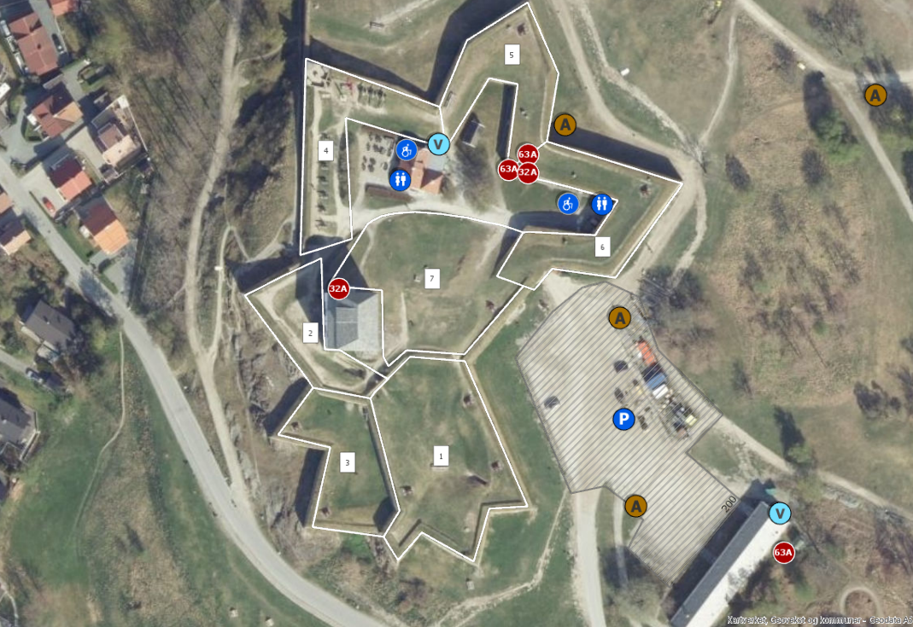
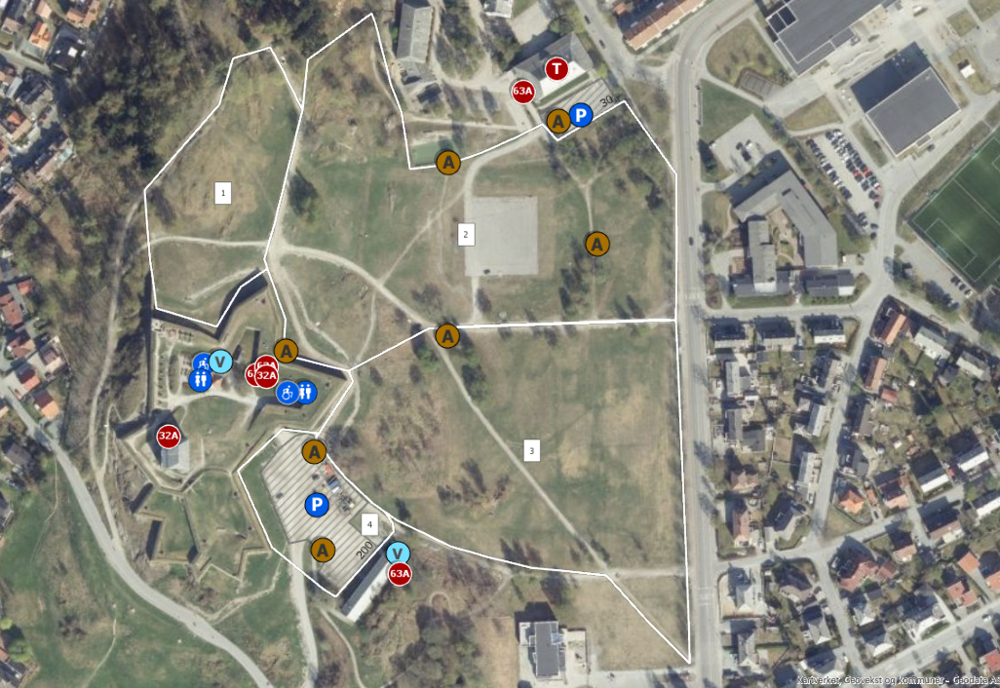

Indre festning

| Nummer |
Område Navn |
| 1 |
Den dobbelte tenaljen |
| 2 |
Kongens bastion |
| 3 |
Den lavereliggende tenaljen |
| 4 |
Kronprinsessens batteri |
| 5 |
Kronprinsens bastion |
| 6 |
Arnolds Batteri |
| 7 |
Portkurtinen |
Ytre festning

| Nummer |
Område Navn |
| 1 |
Små bergan |
| 2 |
Paradeplassen |
| 3 |
Festningssletta |
| 4 |
Place d'arms |
Området rundt festningen er like nydelig som festningens utsikt. Lokalene er likeverdige i historisk betydning. Det lønner seg å ta en tur utenfor!I tillegg, hvis du vil finne ut hvorfor festningen ser ut som det gjør i dag kan du lese vår historie side her.